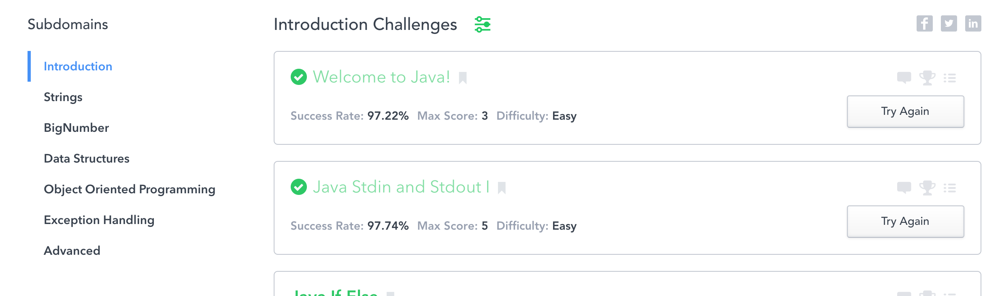

Self Reflection Project: Eight hours worth of study and self evaluation on both technical and non technical matters.
Worked through some problems, I would like to spend more time practicing these types of algorthimic based problems.
I would like to grow my Java skillset and I think this is a great resource to do it. I just started taking a look here and would like to continue going through these lessons even the simple intro level had something to offer to my base knowledge of Java.
I would like to get more practice with technical questions and problem solving skills. Here's a link of a book I started reading.
I will start solving at least one problem a day after class to keep my skillset up and to learn more about algorithms that serve both programming skills and interview questions.
I plan on working on a cover letter and having it completed within the next two weeks.
I will commit to weekly courses of Java to strengthen my knowledge of Java as an object oriented programming language.